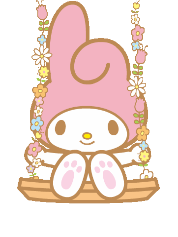
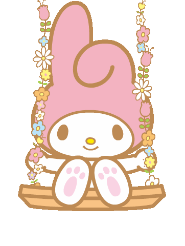

Mi Historia
Me llamo Sofía y me apasiona la tecnología y la programación. Desde pequeña siempre tuve curiosidad por cómo funcionaban las cosas, pero fue gracias a mis amistades que descubrí el mundo de la programación. Poco a poco, me fui interesando más en este campo y decidí comenzar a aprender. Aunque todavía estoy en proceso, cada día descubro algo nuevo y me emociona seguir explorando todo lo que la tecnología tiene para ofrecer.
Sobre Mí
Soy Sofia, una apasionada de estudiante.
Información Personal
- Nombre:
- Eileen Sofia Jeronimo Camargo
- Ocupacion:
- Estudiante de desarrollo web
- Ubicación:
- Colombia,Villavicencio
- Intereses:
- Jugar videojuegos,aprender mucho mas en este campo y llevar una vida saludable
- Contacto:
- sofiajeronimocamargo90@gmail.com
| # | Nombre | Número de Celular | Correo Electrónico | Red Social | Relación |
|---|---|---|---|---|---|
| 1 | Eileen | 310 458 3068 | sofiajeronimocamargo90@gmail.com | Yo | |
| 2 | Camila | 320 123 4567 | camila123@gmail.com | Amiga | |
| 3 | Juan | 311 987 6543 | juan456@gmail.com | Hermano |
Mis Pasatiempos
- Programar: Me encanta aprender nuevos lenguajes de programación y mejorar mis habilidades. Disfruto creando proyectos, resolviendo problemas y explorando diferentes tecnologías que me ayuden a crecer en este mundo.
- Jugar videojuegos: Los videojuegos son una de mis grandes pasiones. Me gusta sumergirme en mundos virtuales, disfrutar de buenas historias y competir en juegos en línea. Entre mis favoritos están los juegos de estrategia, aventura y shooters.
- Escuchar música: La música es una parte fundamental de mi vida. Me gusta explorar diferentes géneros y descubrir nuevas canciones que me inspiren o me ayuden a concentrarme. Desde el rock hasta la música instrumental, siempre encuentro algo que se adapta a mi estado de ánimo.
- Hacer caminatas y estar en forma: Me gusta salir a caminar y mantenerme activa. Disfruto la sensación de respirar aire fresco, relajarme mientras camino y mantener un estilo de vida saludable. Hacer ejercicio me ayuda a despejar la mente y sentirme con más energía.
- Dibujar y pintar: El arte es otra de mis grandes pasiones. Me encanta dibujar y expresarme a través del color y las formas. Prefiero pintar con acuarelas, ya que me gusta cómo se mezclan los tonos y el efecto relajante que produce trabajar con agua y pigmentos.
- Aprender cosas nuevas: Siempre estoy buscando aprender algo nuevo, ya sea sobre tecnología, ciencia, historia o cualquier tema interesante. Me gusta leer, ver documentales y explorar nuevas habilidades que me ayuden a crecer personal y profesionalmente.
Mi serie favorita
Mi cancion favorita
Receta de Ceviche Peruano
El ceviche peruano es un plato tradicional a base de pescado marinado en jugo de limón, acompañado de cebolla morada, ají y otros ingredientes que resaltan su sabor.
Ingredientes:
- 500 g de pescado fresco (corvina, mero o lenguado)
- 10 limones (solo el jugo)
- 1 cebolla morada en juliana
- 1 ají limo rojo (finamente picado, sin semillas)
- 2 ramas de cilantro fresco picado
- Sal y pimienta al gusto
- 1 diente de ajo finamente picado
- Hielo en cubos (opcional, para cortar la cocción)
- Camote cocido (para acompañar)
- Choclo desgranado y cocido
- Canchita serrana (maíz tostado)
Preparación:
- Limpieza y corte del pescado: Lava bien el pescado con agua fría y córtalo en cubos de aproximadamente 2 cm.
- Marinado: Coloca el pescado en un recipiente y agrégale el ajo picado, el ají limo y salpimienta al gusto.
- Agregar el jugo de limón: Exprime los limones y vierte el jugo sobre el pescado. Deja reposar por 5 minutos para que se marine bien.
- Añadir la cebolla y el cilantro: Incorpora la cebolla morada en juliana y el cilantro picado, mezclando suavemente.
- Ajuste de sabor: Si lo deseas, puedes agregar un par de cubos de hielo para cortar la cocción del pescado y lograr una textura más firme.
- Servir: Acompaña el ceviche con camote cocido, choclo y canchita serrana.
Consejo: El ceviche se disfruta mejor cuando está fresco. ¡Prepáralo y sírvelo al instante!